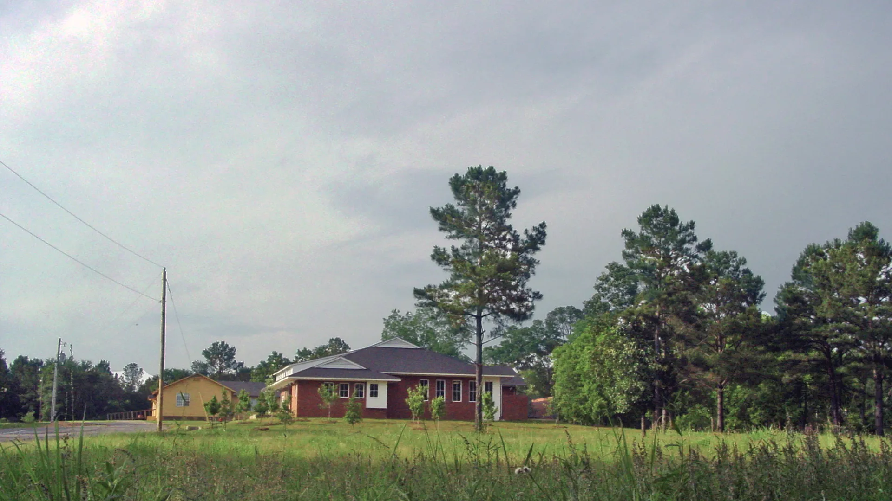
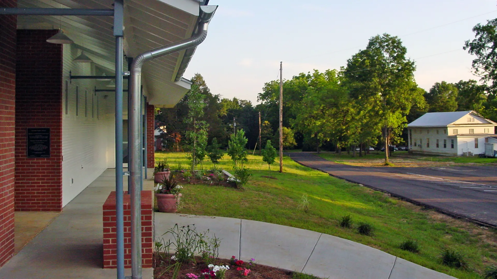
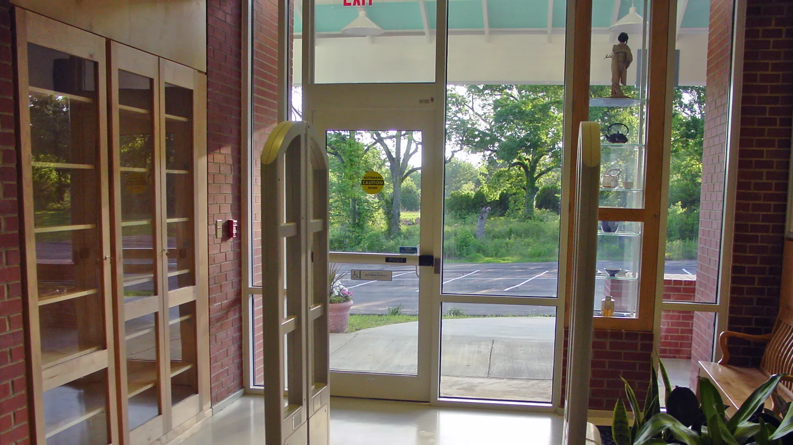
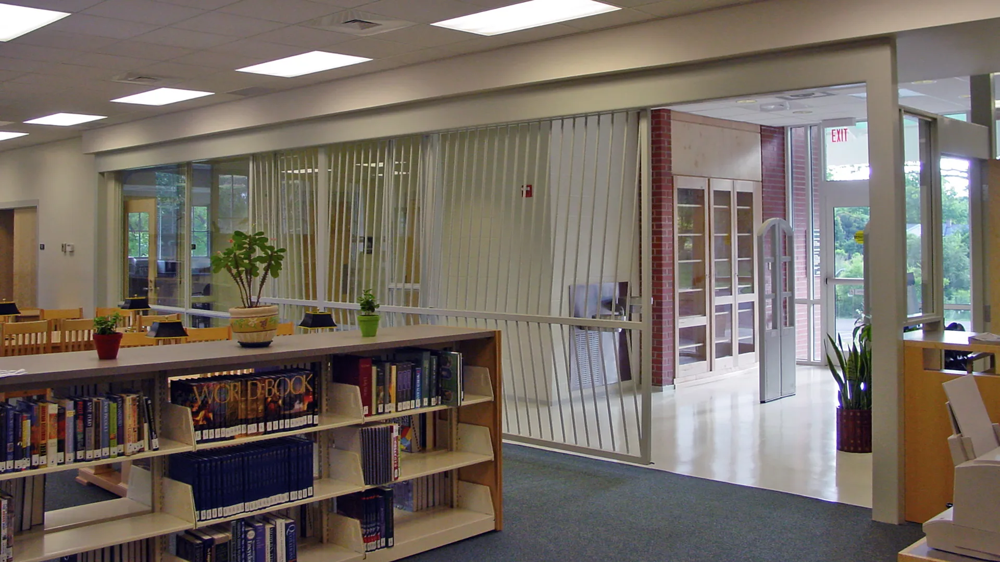
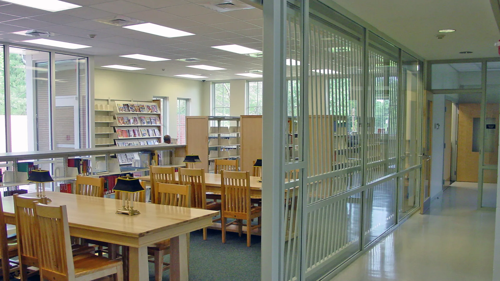
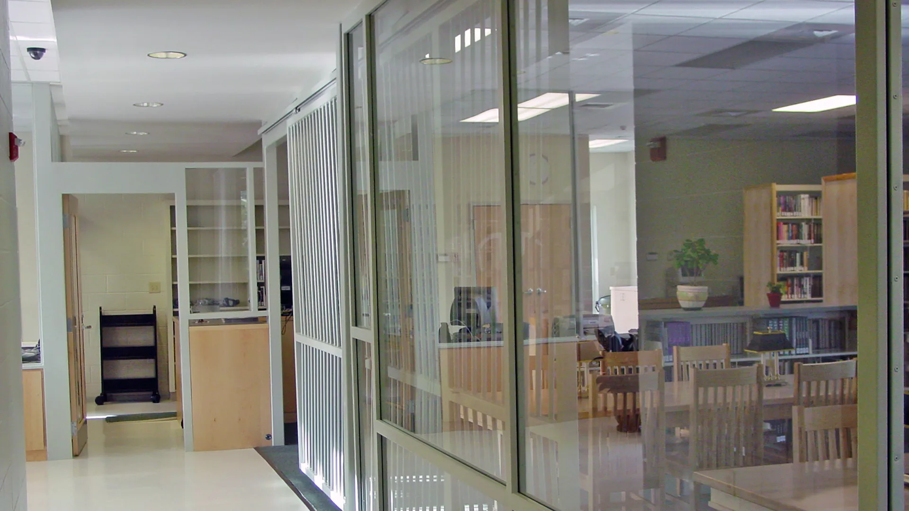
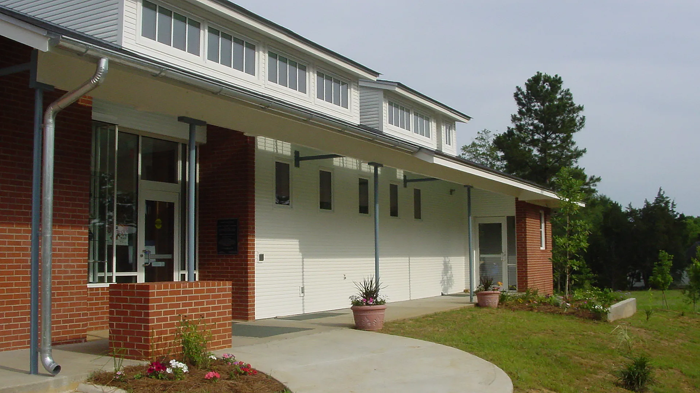

Camden Library
Camden, Mississippi
A long-deserved branch library, the Camden Library reflects the local vernacular architecture in this rural Madison County hamlet. It respects the historic buildings of Camden while carrying a strong sense of public identity. In addition to normal library functions, the library includes a community meeting room and a reading garden.
Completed 2003






